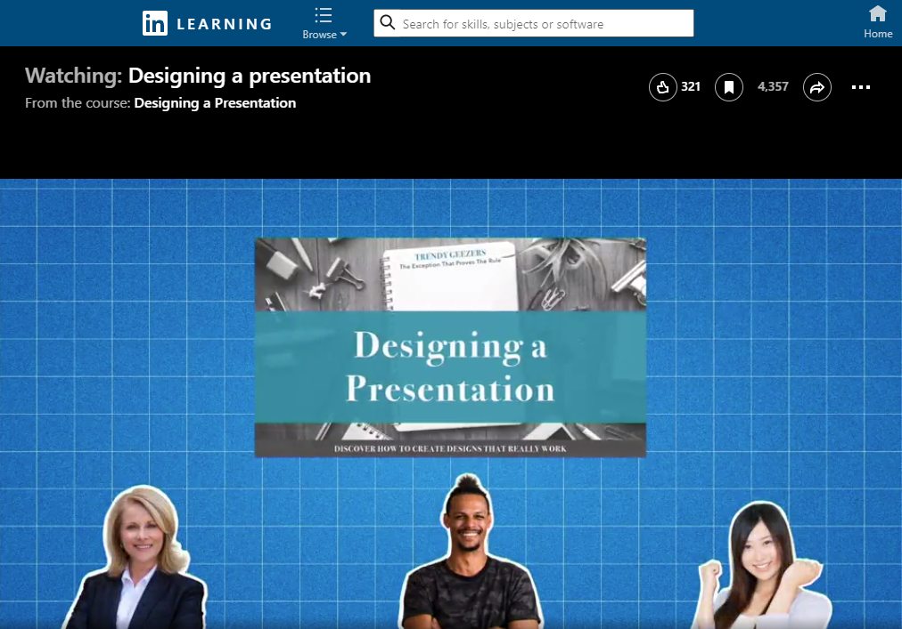

What You Will Learn and Practice
- Use conventions of various workplace genres, such as proposals, instructions, correspondence, reports, and slide decks, with understanding of how the genre conventions can be used as heuristics and as principles of arrangement. [CLO 4]
- Apply principles of effective visual design for print and electronic presentation, including hierarchical, chronological, and spatial arrangements. [CLO 6]
- Identify and apply the principles of effective style in the composing of usable, reader-centered written communications. [CLO 7]
 What I Want You to Do
What I Want You to Do
Watch the LinkedIn Learning video to learn about how to design your slides effectively. The video will tell you about layout and design, including choosing colors, fonts, and images. The full course lasts just short of an hour. The video is FREE with your Virginia Tech login.
Why I Want You to Do It
This video course has received many positive comments from students in the past, so I know that you can learn something that will help as you design the slides for your Pitch Presentation.
When to Do It
- Suggested Due Date: By 11:59 PM on Friday, March 18, 2022.
- End of Grace Period: At 11:59 PM on Friday, April 29, 2022.
How You Do It
- Watch the complete LinkedIn Learning course Designing a Presentation (56m). The video is free with your VT login. Follow these instructions to login. If you need additional help, contact 4Help.
 - Once you finish the course, download the Certificate of Completion and upload the file to this assignment. If you need help, check the LinkedIn Learning help file View and Download Learning Certificates of Completion.
How to Assess & Track Your Work
You track and grade your own work in this course. Be sure to complete the following tasks:
- Track your work in your Weekly Work Log.
Work is always marked as either 1 for Complete or 0 for Incomplete:
- I will mark this activity Complete in Canvas Grades, usually within 24–48 hours after the end of the grace period.
- I will mark this activity Incomplete in Canvas Grades if you do not submit your certificate by the end of the grace period.